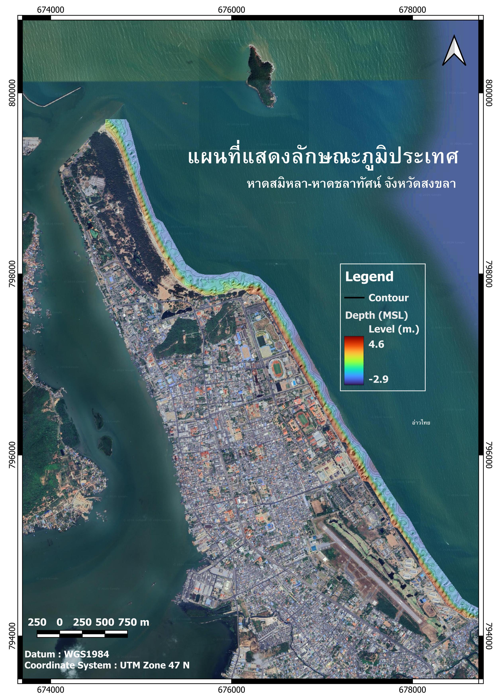

ศูนย์แผนที่สำรวจและคุณภาพน้ำ
หาดชลาทัศน์ - สมิหลา
ระบบติดตามคุณภาพน้ำ ข้อมูลแบคทีเรีย ภาพถ่ายจากโดรน ระดับความลึกพื้นทะเล และสภาพอากาศแบบใกล้เคียงเวลาจริง เพื่อสนับสนุนการบริหารจัดการพื้นที่ชายหาด
 คุณภาพน้ำ
คุณภาพน้ำ
 ภาพถ่ายโดรน
ภาพถ่ายโดรน
 ข้อมูลลักษณะภูมิประเทศ
ข้อมูลลักษณะภูมิประเทศ
 สภาพอากาศ
สภาพอากาศ
ระบบข้อมูลเชิงพื้นที่ชายฝั่ง
HydroGIS คืออะไร
HydroGIS คือระบบสารสนเทศภูมิศาสตร์ (GIS) สำหรับแสดงและเชื่อมโยงข้อมูลการสำรวจทางน้ำและพื้นที่ชายฝั่งบนแผนที่ดิจิทัล ช่วยให้เห็นข้อมูลประกอบกับตำแหน่งจริง เพื่อใช้ในการติดตามและวางแผนจัดการพื้นที่
สำรวจข้อมูลบนแผนที่ →สภาพอากาศวันนี้
กำลังค้นหาตำแหน่ง
กรุงเทพมหานคร
กำลังโหลด
--°C
กำลังโหลดข้อมูลสภาพอากาศ
โปรดรอสักครู่
สูงสุด --°
ต่ำสุด --°
อุณหภูมิที่รู้สึก--°C
ความชื้น--%
ลม-- กม./ชม.
ฝนสะสม-- มม.
ระบบจะขออนุญาตใช้ตำแหน่งเพื่อแสดงสภาพอากาศที่ตรงกับคุณ
ข้อมูลคุณภาพน้ำ
ดูทั้งหมดบนแผนที่ →| กำลังโหลดข้อมูลคุณภาพน้ำ | |||||||||
กำลังโหลดผลตรวจ E. coli
Ctrl + หมุนล้อเมาส์เพื่อซูมเข้า/ออก
ภาพถ่ายจากโดรน
หาดชลาทัศน์และหาดสมิหลา
คลองสำโรง
เกาะหนู
ข้อมูลลักษณะภูมิประเทศ

แผนที่แสดงลักษณะภูมิประเทศหาดสมิหลา-หาดชลาทัศน์ จังหวัดสงขลา
ระดับพื้นชายหาด
ระดับพื้นเกาะหนู
สำรวจข้อมูลเชิงพื้นที่แบบเต็มรูปแบบ
เข้าสู่ระบบแผนที่เพื่อดูชั้นข้อมูล ขอบเขตชายหาด เส้นชั้นความสูง ทิศทางกระแสน้ำ และจุดเสี่ยง
เปิดระบบแผนที่ HydroGIS